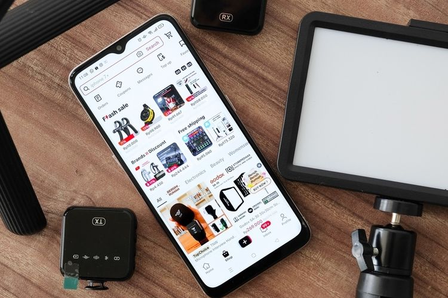

Jakarta, CNN Indonesia --
Instagram dan Facebook akan meluncurkan fitur yang memungkinkan
pengguna untuk menghapus iklan di lini masanya. Namun, pengguna perlu
membayar sebesar 10 euro atau sekitar Rp160 ribu. Fitur ini dilaporkan
akan segera hadir untuk pengguna yang berbasis di Eropa. Fitur
tersebut merupakan upaya Meta mematuhi peraturan Uni Eropa yang
mengancam akan membatasi kemampuan Meta untuk mempersonalisasi iklan
bagi pengguna tanpa persetujuan mereka dan merugikan sumber pendapatan
utamanya. Dikutip dari Reuters, menawarkan pilihan antara paket gratis
yang didukung iklan dan langganan berbayar mungkin akan membuat
pengguna memilih paket yang pertama, sehingga membuat Meta mematuhi
peraturan Uni Eropa tanpa mempengaruhi bisnis iklannya. Harga untuk
menggunakan fitur tersebut mungkin akan berbeda pada perangkat
seluler. Harga untuk satu akun bisa menjadi sekitar 13 euro atau
sekitar Rp212 ribu karena Meta akan memperhitungkan komisi yang
dibebankan oleh toko aplikasi Apple dan Google. Perusahaan media
sosial ini kemudian mengatakan bahwa mereka bermaksud untuk meminta
persetujuan dari para pengguna di Uni Eropa sebelum mengizinkan bisnis
untuk menargetkan iklan untuk memenuhi persyaratan peraturan yang
terus berkembang di wilayah tersebut. Juru bicara Meta mengatakan
perusahaan ini tetap ingin memberikan "layanan gratis yang didukung
oleh iklan yang dipersonalisasi," tetapi sedang menjajaki opsi-opsi
untuk memastikan pihaknya mematuhi persyaratan peraturan yang terus
berkembang.
Waspada "Spoofing-Social Engineering": Kejahatan Siber Pembobolan Rekening

KOMPAS.com --
KEJAHATAN siber dengan modus spoofing-social
engineering kembali terulang. Korban terbaru bermodus pengiriman file APK yang disarukan seolah-olah surat pemberitahuan
tilang, membuat korban mengalami kerugian hingga Rp 2,3 miliar setelah rekening banknya dikuras pelaku. Realitas menunjukan, dalam menjalankan aksinya, pelaku kejahatan siber tidak melulu mengandalkan teknologi. Ia juga memanfaatkan kelengahan dan faktor psikologis korbannya. Hal inilah yang disebut social engineering yang salah satu modusnya berupa spoofing. "Spoofing" Referensi tentang spoofing antara lain dipublikasikan oleh Federal Bureau of Investigation (FBI) AS dengan judul "Spoofing and Phishing" (2023). FBI menyebut, spoofing adalah tindakan di mana seseorang menyamarkan alamat email, nama pengirim, nomor telepon, atau URL situs web. Menurut FBI, spoofing adalah salah satu teknik kejahatan siber yang tujuannya sama dengan phishing. Modusnya mengelabui atau memikat korban agar mengambil umpan tersebut. Penipuan ini dirancang agar korban memberikan informasi seperti username dan password mobile banking secara tanpa sadar. Awalnya, spoofing adalah modus berupa menyarukan URL atau nama domain internet. Penipu seringkali hanya mengubah satu huruf, simbol, atau angka untuk meyakinkan dan membuat korban mengira bahwa ia berinteraksi dengan email atau web terpercaya. Pelaku secara cerdik kemudian mengarahkan korban untuk melakukan tindakan tertentu, atau berkunjung ke web palsu untuk mengisi data pribadi. Spoofing secara umum merupakan tindakan pelaku kejahatan siber menyamar sebagai entitas atau perangkat tepercaya, sehingga korban kemudian melakukan sesuatu bagi peretas. Setiap kali pelaku melakukan penyamaran identitas sebagai orang lain, maka itulah yang disebut spoofing. Spoofing dapat dilakukan dengan formula dan tingkat kerumitan teknis beragam, termasuk dengan kombinasi elemen social engineering. Pelaku memanipulasi korbannya secara psikologis dengan mempermainkan kerentanan individu seperti rasa takut, keinginan dan ambisi, atau kondisi gagap teknologi. Spoofing secara teknis saat ini dilakukan lebih canggih karena dikombinasikan dengan pendekatan tebar aplikasi. Pelaku mengirim file APK, yang jika diklik berakibat fatal karena bisa menyedot data pribadi dan sensitif, seperti data mobile banking korban. Belakangan, dengan perkembangan teknologi digital, modus spoofing banyak dilakukan juga melalui WA, Telegram, atau jenis media perpesanan lainnya yang dengan mudah menggunakan profil atau foto palsu pihak lain. Jika korban berhasil terperdaya karena mengklik tautan APK yang dikirim, maka pelaku bisa melakukan penyadapan, mengambil data, dan informasi korban secara ilegal melalui jaringan
internet.
Lomba Cyber Security, Wali Kota Benyamin: Ini Menjaga Kedaulatan Negara

SindoNews --
Dinas Komunikasi dan Informatika (Diskominfo) Tangerang Selatan (Tangsel) menyelenggarakan Olimpiade Cyber Security Hacking terkait Capture The Flag. Event ini bekerjasama dengan Institut Teknologi Tangerang Selatan (ITTS) dan Onno Centre. Ajang bergengsi ini diikuti 249 peserta dari tingkat SMA sederajat dan umum dari berbagai kota di Indonesia dengan maksimal umur 18 tahun. Hasilnya didapati 8 pemenang dari berbagai wilayah di Indonesia. Penyerahan hadiah diberikan langsung Wali Kota Tangsel Benyamin Davnie saat acara halalbihalal di Plaza Puspemkot Tangsel, Rabu (11/5/2023) malam. Benyamin mengatakan kekagumannya kepada para pemenang.
Di usia yang masih muda, para peserta sudah memiliki kemampuan yang luar biasa dalam pemahaman dan kaitannya soal cyber security . "Ini penting sekali terutama dalam menjaga kedaulatan negara ini di dunia maya," katanya saat menyerahkan penghargaan. Kemampuan di bidang IT ini sangat penting karena perkembangan teknologi di Indonesia sangatlah cepat. "Untuk itu kecepatan perkembangan teknologi ini harus kita jaga juga dari hal-hal yang membahayakan di dunia maya. Penting kita memiliki SDM yang mumpuni dalam menjaga keamanan dunia maya," terangnya. Kepala Diskominfo Tangsel Tubagus Asep Nurdin menerangkan kompetisi cyber security ini berfokus pada aspek operasional pengelolaan, perlindungan layanan, dan infrastruktur sistem informasi. Ajang ini menjadi kesempatan bagi para peserta menguji kemampuan dan pengetahuannya di bidang keamanan siber. "Selain itu kesempatan ini menjadi peluang bagi para peserta untuk dapat menjalin hubungan dengan para profesional industri teknologi informasi," ucapnya. Apalagi ajang ini melalui tahapan yang panjang. Mulai dari fase basic, middle, dan advance hingga terakhir tahapan wawancara dengan dewan juri. "Jadi lomba ini kita mulai dari 3-29 April dengan berbagai tahapan hingga wawancara dan didapatlah pemenangnya," ungkapnya.
Juara pertama diraih Ardhi Putra Perdana dari SMK N 7 Semarang, juara kedua didapat oleh Bill Elim dari Jakarta, dan juara ketiga Saeful Diyan dari Pemalang. Selanjutnya peringkat keempat Nabil Irawan dari Banyuwangi dan kelima Endra Anugrah dari Malang. Sedangkan juara harapan satu diraih Muhammad Naufal dari Jakarta, kedua diraih Rafid dari Sukuharjo, dan ketiga Livio Hardi dari Berau. "Para juara ini mendapatkan beasiswa dari ITTS, uang pembinaan serta tambahan hadiah lainnya berupa laptop dan handphone," jelasnya.
TikTok Shop Tutup, Ini Siasat Penjual Tetap Dapat Pembeli dari TikTok

KOMPAS.com --
Fitur belanja online TikTok Shop resmi ditutup pada Rabu (4/10/2023) pukul 17.00 WIB. Setelah TikTok Shop tutup, penjual (seller) tidak bisa menampilkan keranjang kuning, etalase produk, dan melakukan kegiatan transaksi di dalam aplikasi TikTok. Namun, hal itu tidak menghentikan langkah penjual untuk mendulang cuan. Pantauan KompasTekno, Kamis (5/10/2023), banyak pedagang (seller) alumni TikTok Shop yang masih lanjut melakukan siaran langsung (live) untuk mempromosikan barang dagangannya di TikTok. Namun dengan siasat baru, yakni mengalihkan pembeli ke marketplace lain dan WhatsApp.
Saat live, penjual kini tidak bisa mencantumkan keranjang kuning. Sebagai gantinya, kini penjual menampilkan sebuah banner kecil di layar. Banner itu akan langsung terlihat oleh pembeli ketika mengikuti siaran langsung seller. Isinya merupakan nomor WhatsApp toko dan nama toko di marketplace lain. Pengguna masih bertanya soal produk yang dijual lewat kolom komentar TikTok Live. Namun, untuk membeli atau check-out, pengguna harus beralih secara mandiri ke aplikasi marketplace atau WhatsApp, tergantung mana yang dipakai oleh seller. Sejumlah pengguna TikTok terpantau masih bingung dengan hilangnya keranjang kuning di TikTok. Nah, banner yang ditampilkan penjual ini dapat membantu pengguna mengetahui bahwa kini transaksi dilakukan di aplikasi marketplace/WhatsApp, tidak lagi secara langsung di TikTok.
Tak hanya banner di layar TikTok Live, kini pengguna juga mencantumkan Linktree di bio TikTok miliknya. Linktree memungkinkan calon pembeli mendapatkan tautan (link) lengkap ke toko di marketplace, website, blog, bahkan link untuk memulai percakapan WhatsApp dengan toko. Kini, Linktree tersebut juga dimanfaatkan sejumlah penjual untuk menampilkan etalase produk. Penjual akan menampilkan display produk di layar. Masing-masing produk diberikan penomoran untuk memudahkan pengguna mencari etalase di Linktree yang dipasang di bio toko. Pengguna tinggal mengeklik link etalase produk yang yang ingin dibeli. Link tersebut langsung mengalihkan pengguna ke aplikasi marketplace untuk produk yang diinginkan
X Twitter Makin Ditinggal Pengguna sejak Dipimpin Elon Musk
KOMPAS.com --
Jumlah pengguna aktif harian/daily active users (DAU) Twitter yang kini berubah nama menjadi X, dilaporkan menurun, sejak dibeli Elon Musk akhir Oktober 2022. Hal itu diumbar secara tidak langsung oleh CEO X, Linda Yaccarino. Dalam sebuah wawancara di acara "Code 2023" yang dihelat Vox Media, mulanya, Yaccarino mengungkap bahwa X kini memiliki 225 juta pengguna aktif harian. Namun, tak lama Yaccarino merevisi ucapannya. Dia mengatakan bahwa jumlah pengguna aktif harian X saat ini adalah 245 juta. Kendati sudah direvisi, jumlah tersebut tetap lebih rendah sekitar 3,7 persen dari sebelum dibeli Elon Musk.
Sebagai perbandingan, sekitar sepekan sebelum resmi diakuisisi Musk (grafik tanggal 23 Oktober), jumlah pengguna aktif harian Twitter mencapai 254,5 juta. Data itu diumbar langsung oleh Elon Musk sendiri lewat posting di akun resminya.
Berdasarkan grafik yang dibgikan Musk, sebetulnya jumlah pengguna aktif harian kian naik, hingga akhir November 2022, atau sebulan kepemimpinan Musk. Pada bulan November akhir (grafik tanggal 20 November), jumlah pengguna aktif harian Twitter mencapai 259,4 juta. Apabila dibandingkan dengan data terbaru yang diumbar Yaccarino, penurunannya mencapai 5,6 persen atau hampir 15 juta pengguna. Penurunan jumlah pengguna aktif harian X juga sempat dilaporkan perusahaan riset aplikasi Apptopia pada Agustus 2023. Laporan ini menyebut, jumlah pengguna aktif harian Twitter menurun sejak rebranding (perubahan nama merek) dari Twitter menjadi X.